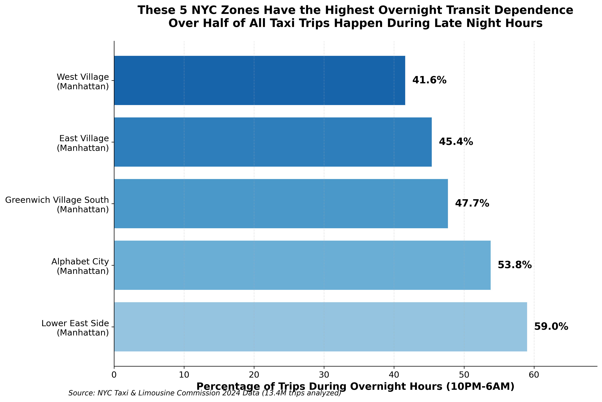
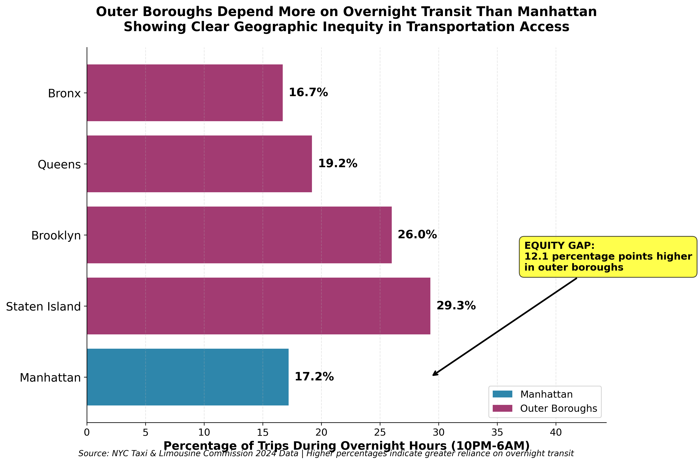
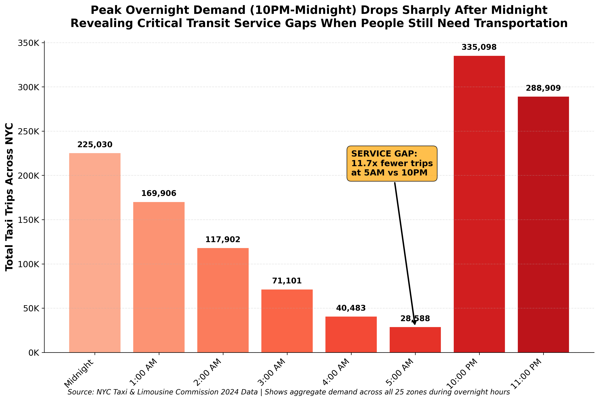

Uncovering critical disparities in NYC's overnight transit system
59%
Lower East Side Overnight Dependency
2.3M+
Overnight Trips Analyzed
265+
NYC Taxi Zones Studied
12.1%
Transit Equity Gap (Staten Island vs Manhattan)
Key Findings
Geographic Disparities: Significant overnight transit reliance varies dramatically across NYC boroughs and zones
Service Gaps: Critical gaps exist during 10PM-1AM when demand peaks in key zones
Affected Communities: Late-night workers and lower-income neighborhoods face greatest burden
Key Findings: Transit Equity Data Visualizations
These simplified visualizations immediately reveal critical transit equity issues across NYC. Each chart tells one clear story about transportation disparities.
Highest Overnight Transit Dependence

Key Finding: Five Manhattan zones show over 40% of all taxi trips occur during overnight hours (10PM-6AM), with Lower East Side leading at 59%. This reveals critical dependence on overnight transportation in dense urban areas.
Geographic Transit Equity Gap

Key Finding: Outer boroughs show significantly higher overnight transit dependence than Manhattan, with Staten Island at 29.3% vs Manhattan at 17.2% - a 12.1 percentage point equity gap revealing transportation disparities.
Critical Service Gaps Timeline

Key Finding: Demand drops 11.7x from 10PM peak (335K trips) to 5AM low (29K trips), revealing critical service gaps during early morning hours when people still need transportation but options are severely limited.
Research Methodology
Data Source
Dataset: NYC Taxi & Limousine Commission Yellow Taxi data (2024)
Coverage: February, April, July, October 2024
Sample Size: 13.4M raw trips → 13.2M cleaned trips
Overnight Focus: 2.3+ million overnight trips (10PM-5:59AM)
Geographic Scope: All 5 boroughs + Newark Airport
Analysis Zones: 265+ taxi zones (min. 10K trips per zone)